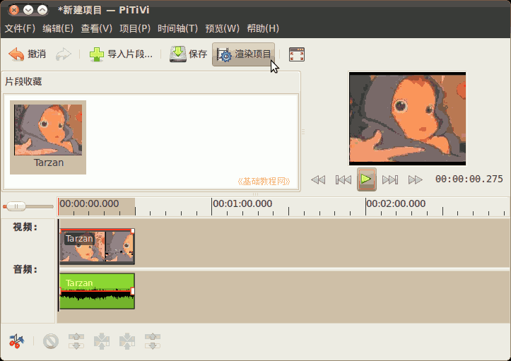
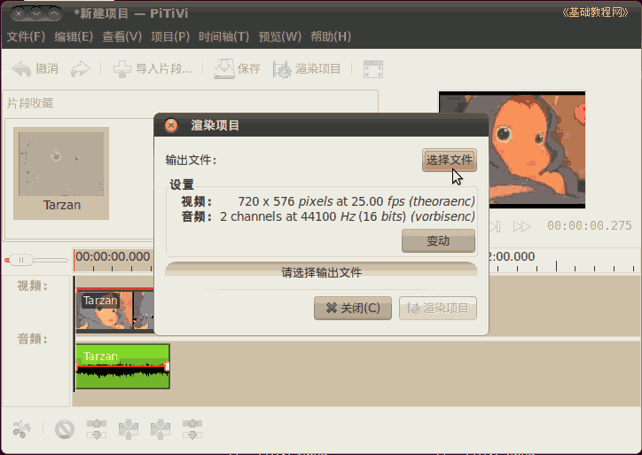
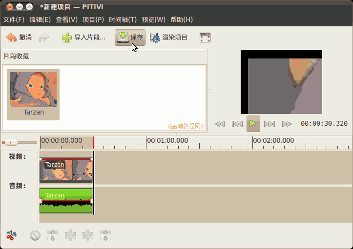

Ubuntu/GNOME 桌面程序指南
作者：TeliuTe 来源：基础教程网
八十一、Pitivi 视频编辑器 返回目录 下一课使用它，您可以编辑、转换、剪裁视频文件；
1、编辑视频
1）点菜单“应用程序 - 影音 - Pitivi 视频编辑器”，打开窗口；
2）上边是存放待加工的视频的片段区和播放窗口，下边是时间轴；
3）点工具栏上的“导入片段”按钮，打开要处理的视频文件，本课 images 文件夹中有一个素材：Tarzan.ogv
4）打开的视频，放在上边片段收藏区，可以导入多个视频；
5）把上边的视频，拖动到下边的时间轴里，错了就点工具栏上的“撤消”；
6）在时间标尺上点击选择一个时间，红色指针指向那儿；
7）点左下角的剪刀按钮，把视频分割成两部分；
8）在后半部分视频中点击选中它，点菜单“时间轴 - 删除”，只留下前半段视频；
9）在右边播放窗口中，点播放按钮，看一下视频效果；
2、渲染视频
1）点工具栏上的“渲染项目”按钮，导出视频文件；

2）在出来的对话框中，点 “保存文件” 选择存储视频的位置和名称；

3）输入文件名，位置选择“视频”文件夹，点“确定”；
4）再点“变动”按钮，设置视频尺寸和编码选项；
5）点视频输出下拉列表，选 “自定义”，设定文件的尺寸和帧频，同样可以设置音频输出，点“确定”返回；
6）回来点“渲染项目”按钮开始渲染，这需要较长的时间，取决于电脑速度；
7）完成以后点工具栏上的“保存”按钮，保存项目编辑文件，以便下次接着使用；

本节学习了Pitivi 视频编辑器的基础知识，如果你成功地完成了练习，请继续学习下一课内容；
本教程由86团学校TeliuTe制作|著作权所有
基础教程网：http://teliute.org/
美丽的校园……
转载和引用本站内容，请保留版权信息和本站链接。